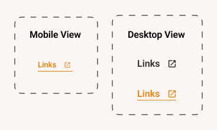
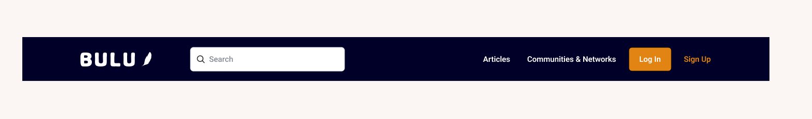
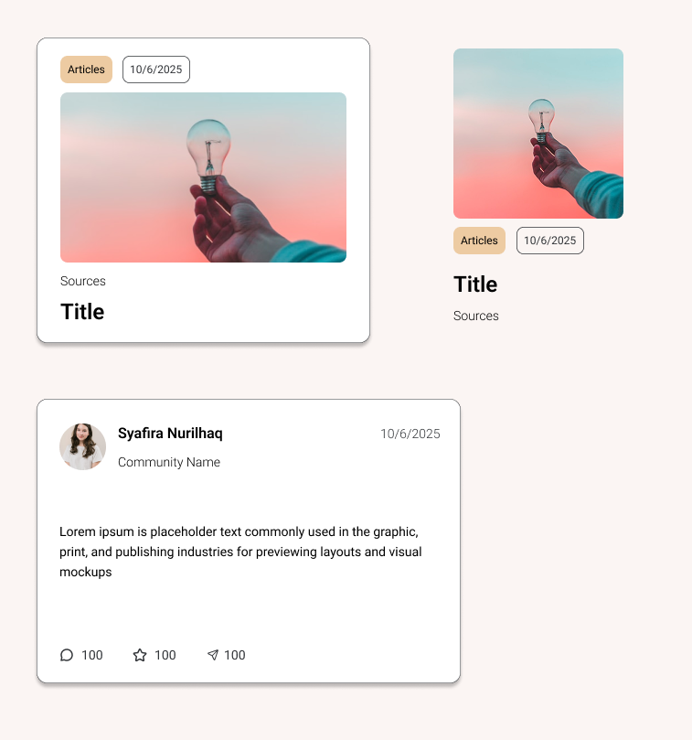

Behavioral Guide
This section outlines the principles and guidelines for designing user interactions that effectively influence user behavior in a positive manner. The goal is to create an engaging and intuitive experience that encourages desired actions while respecting user autonomy.
Links
Links are styled to be easily identifiable and accessible.
Menu and Navigation
The navigation menu is designed to be simple and intuitive, allowing users to easily find and access different sections of the website.
Card Component
Cards are used to present information in a concise and visually appealing manner. They are designed to be interactive, encouraging users to click for more details.
Buttons
Buttons are designed to be easily recognizable and actionable. Different styles are used to indicate primary actions, secondary actions, and disabled states.
This is an example of Call-to-action button. I put primary button that has solid color, and secondari button that is transparent and only has outline. It has clear label to support clarity.
This is an example of button that is disabled. Users wont be able to click into it. I also set the cursor to be not-allowed when hovering over the button.
This is an example of icon-only button that is accessible for people with reading difficulties
Forms and Input Fields
Forms are designed to be user-friendly, with clear labels and instructions. Validation messages are provided to guide users in correcting errors.